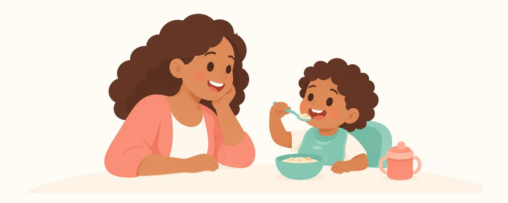

「感染の窓」はもう古い？むし歯菌がうつることとスプーンの共有、今の考え方
むし歯菌は19〜31か月の時期だけにうつるという「感染の窓」は、もう古い考え方です。菌がうつるしくみ、スプーンやキスの心配、本当に大切な糖・フッ素・歯みがきのケアをまとめました。
ひと目でチェック
- むし歯菌は特定の時期だけでなくいつでもうつります
- 菌よりも糖を減らすこと、フッ素、歯みがきが大切
- 大人自身のむし歯の治療も、子どものためになります
「スプーンを共有するとむし歯がうつりますか？」「子どもにキスしてもいいですか？」育児情報を調べていると、「感染の窓」という言葉を一度は目にすると思います。特定の時期さえ守ればむし歯を防げる、という話ですが、今では考え方が大きく変わっています。昔の話と今の見解、そしておうちで本当に大切にしたいことをまとめました。
「感染の窓」とはどんな話？今はどう考えられている？
1990年代のある研究で、むし歯菌（ミュータンス菌）が子どものお口に初めて定着する時期が、生後19〜31か月のあいだに集中しているという結果が出ました。そこでこの時期は「感染の窓」と呼ばれ、この数か月さえ守ればよいという話が広まりました。
その後、研究が積み重なるにつれて、見え方が変わってきました。
- 歯が生える前から菌はいます。まだ歯のない赤ちゃんのお口、特に舌からもむし歯菌が見つかっています。
- ママからだけうつるわけではありません。パパ、きょうだい、祖父母、保育園の友だちなど、身近に過ごす人からもうつることがあります。
- 数か月ではなく、ずっとうつり続けます。そのため今では、決まった「窓」があるというより、子ども時代を通して少しずつうつっていくと考えられています。
もっと大きく変わったのは、むし歯のとらえ方です。以前は、むし歯をママからうつる感染症のように考えていました。今では、菌がうつることはいくつもある原因のひとつにすぎないと考えられています。むし歯は菌だけでできるものではありません。甘いものを食べる回数、フッ素を使っているか、どれだけしっかりみがけているかが、一緒になって決めています。ミュータンス菌以外にも、いろいろな菌が関わっていることもわかってきました。
そのため最近のガイドラインでは、菌がうつるのを防ぐことよりも、糖を減らすこと、フッ素、歯みがき、そして定期的な歯科健診に重点が置かれています。
おうちでは、まずこれを大切に
菌がうつるのを完全に防ぐ方法はありません。それよりも、むし歯ができやすい条件を減らすほうがずっと大切です。大切な順にまとめると、こうなります。
- 保護者自身のむし歯や歯周病を治療しましょう。お世話をする大人のお口の健康は、よくも悪くも子どもに影響します。保護者が歯科で治療を受けることも、子どものための予防です。
- 2歳になるまでは、添加された砂糖を避けましょう。お菓子や甘い飲みものなど、わざわざ甘みを加えた食べものは後回しにしてかまいません。
- 夜間授乳やだらだら食べは、少しずつ減らしていきましょう。お口に食べものが入る回数が多いほど、歯が休むひまがなくなります。一度にやめるより、数日ごとに少しずつ減らすと子どもも慣れていきます。
- フッ素入り歯みがき粉で1日2回みがいてあげましょう。3歳未満は米粒くらい、3歳からはグリーンピースくらいの量です。特に寝る前の歯みがきは欠かさないようにします。
- できれば、スプーンや歯ブラシは別々にしましょう。食べものを大人の口でかんでから与えることも、避けたほうがいいでしょう。
- 定期的に歯科健診を受けましょう。子どもによってむし歯のリスクは違うので、健診のときにその子に合った予防法を決められます。
スプーンを分けることを、あえて後ろのほうに置きました。やってみる価値はありますが、スプーンの共有やキスを避けるとむし歯が減る、と直接示した研究はまだありません。おばあちゃんが味見をして食べさせてくれたから、キスをしたからといって、むし歯ができるわけではないので、あまり気にしすぎないでくださいね。
保護者がやってしまいがちなのは、むしろ逆のほうです。スプーンはきっちり分けているのに、ストローマグにジュースを入れて一日中持ち歩かせたり、寝る前の歯みがきを飛ばしたりすることです。子どものむし歯には、こちらのほうがずっと大きく影響します。
よくある質問
子どもにキスをすると、むし歯菌がうつりますか？
だ液を通して菌がうつることはあります。でも、キスを避けるとむし歯が減ると直接示した研究はまだありません。愛情表現は思いきりして、甘いものの回数と歯みがきに気を配ってあげてください。
31か月を過ぎたので、もう安心していいですか？
むし歯菌は特定の時期だけでなく、ずっとうつり続けると考えられています。それに、むし歯は菌よりも食習慣や歯みがきに大きく左右されるので、年齢にかかわらず同じケアを続けていけば大丈夫です。
親にむし歯が多いと、子どももむし歯になりますか？
必ずそうなるわけではありませんが、保護者のお口の健康は子どもに影響します。一緒に食べるものや生活習慣も似やすいものです。保護者が先に治療を受け、家族みんなで甘いおやつを減らせば、子どもにとっても助けになります。
スプーンの共有は完全にやめなければいけませんか？
そこまでする必要はありません。できるときに分けて、食べものをかんでから与えない程度で十分です。守れない日があっても、すぐにむし歯につながるわけではありません。
こんなときは歯科を受診しましょう
- 前歯の歯ぐきの近くに、白い帯やチョークのように濁ったところが見えるとき
- 歯に茶色や黒い点ができたとき
- きょうだいや家族にむし歯が多く、子どものむし歯のリスクが心配なとき
- 最初の歯が生えてから6か月たったのに、まだ歯科に行っていないとき
- 保護者自身に治療していないむし歯や歯周病があるとき（保護者も歯科を受診しましょう）
必要な時期にお知らせで受け取りましょう
歯のカレンダーアプリにお子さんの生年月日（または出産予定日）を入力すると、これらの記事が必要な時期にお知らせとして届きます。無料で、登録も不要です。
出典
この記事の情報は一般的な教育を目的としたもので、歯科医師による診療に代わるものではありません。お子さまの状態については歯科医師にご相談ください。